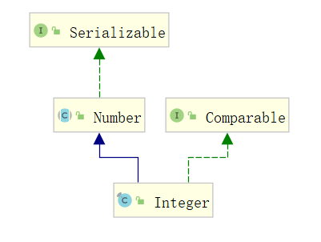
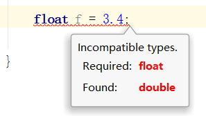

基本数据类型
Java 基础数据按类型可以分为四大类：布尔型、整数型、浮点型、字符型，这四大类包含 8 种基础数据类型。
- 布尔型：boolean
- 整数型：byte、short、int、long
- 浮点型：float、double
- 字符型：char
八种基础类型取值如下：
数据类型 代表含义 默认值 取值 包装类 byte 字节型 (byte)0 -128 到 127 Byte short 短整数型 (short)0 -2^15 到 2^15-1 Short int 整数型 0 -2^31 到 2^31-1 Integer long 长整数型 0L -2^63 到 2^63-1 Long float 单浮点型 0.0f 1.4e-45 到 3.4e+38 Float double 双浮点型 0.0d 4.9e-324 到 1.798e+308 Double boolean 布尔型 false 0(false) 到 1(true) Boolean char 字符型 ‘\u0000’(空) ‘\u0000’ 到 ‘\uFFFF’ Character
除 char 的包装类 Character 和 int 的包装类 Integer 之外，其他基础数据类型的包装类只需要首字母大写即可。包装类的作用和特点，本文下半部分详细讲解。
我们可以在代码中，查看某种类型的取值范围，代码如下：
1 | public static void main(String[] args) { |
包装类型
我们知道 8 种基本数据类型都有其对应的包装类，因为 Java 的设计思想是万物既对象，有很多时候我们需要以对象的形式操作某项功能，比如说获取哈希值（hashCode）或获取类（getClass）等。
那包装类特性有哪些？
- 功能丰富
包装类本质上是一个对象，对象就包含有属性和方法，比如 hashCode、getClass 、max、min 等。
- 可定义泛型类型参数
包装类可以定义泛型，而基础类型不行。
比如使用 Integer 定义泛型，代码：List<Integer> list = new ArrayList<>();
如果使用 int 定义就会报错，代码：
1 | List list = new ArrayList<>(); // 编译器代码报错 |
- 序列化
因为包装类都实现了 Serializable 接口，所以包装类天然支持序列化和反序列化。比如 Integer 的类图如下：

- 类型转换
包装类提供了类型转换的方法，可以很方便的实现类型之间的转换，比如 Integer 类型转换代码：
1 | String age = "18"; |
- 高频区间的数据缓存
此特性为包装类很重要的用途之一，用于高频区间的数据缓存，以 Integer 为例来说，在数值区间为 -128~127 时，会直接复用已有对象，在这区间之外的数字才会在堆上产生。
我们使用 == 对 Integer 进行验证，代码如下：
1 | public static void main(String[] args) { |
从上面的代码很明显可以看出，Integer 为 127 时复用了已有对象，当值为 128 时，重新在堆上生成了新对象。
为什么会产生高频区域数据缓存？我们查看源码就能发现“线索”，源码版本 JDK8，源码如下：
1 | public static Integer valueOf(int i) { |
由此可见，高频区域的数值会直接使用已有对象，非高频区域的数值会重新 new 一个新的对象。
各包装类高频区域的取值范围：
- Boolean：使用静态 final 定义，就会返回静态值；
- Byte：缓存区 -128~127，全部缓存；
- Short：缓存区 -128~127，部分缓存；
- Character：缓存区 0~127，部分缓存；
- Long：缓存区 -128~127，部分缓存；
- Integer：缓存区 -128~127，部分缓存。
包装类的注意事项
int 的默认值是 0，而 Integer 的默认值是 null。
推荐所有包装类对象之间的值比较使用 equlas() 方法，因为包装类的非高频区数据会在堆上产生，而高频区又会复用已有对象，这样会导致同样的代码，因为取值的不同，而产生两种截然不同的结果。代码示例：
1
2
3
4
5
6
7
8
9
10
11
12
13public static void main(String[] args) {
// Integer 高频区缓存范围 -128~127
Integer num1 = 127;
Integer num2 = 127;
// Integer 取值 127 == 结果为 true（值127 num1==num2 => true）
System.out.println("值127 num1==num2 => " + (num1 == num2));
Integer num3 = 128;
Integer num4 = 128;
// Integer 取值 128 == 结果为 false（值128 num3==num4 => false）
System.out.println("值128 num3==num4 => " + (num3 == num4));
// Integer 取值 128 equals 结果为 true（值128 num3.equals(num4) => true）
System.out.println("值128 num3.equals(num4) => " + num3.equals(num4));
}Float 和 Double 不会有缓存，其他包装类都有缓存。
Integer 是唯一一个可以修改缓存范围的包装类，在 VM optons 加入参数：
1 | -XX:AutoBoxCacheMax=666 即修改缓存最大值为 666 。 |
示例代码如下：
1 | public static void main(String[] args) { |
执行结果如下：
1 | 值为-128 => true |
相关面试题
- 以下 Integer 代码输出的结果是？
1
2
3
4
5Integer age = 10;
Integer age2 = 10;
Integer age3 = 133;
Integer age4 = 133;
System.out.println((age == age2) + "," + (age3 == age4));
答：true,false
- 以下 Double 代码输出的结果是？
1
2
3
4
5Double num = 10d;
Double num2 = 10d;
Double num3 = 133d;
Double num4 = 133d;
System.out.println((num == num2) + "," + (num3 == num4));
答：false,false
- 以下程序输出结果是？
1
2
3
4int i = 100;
Integer j = new Integer(100);
System.out.println(i == j);
System.out.println(j.equals(i));
A：true,true
B：true,false
C：false,true
D：false,false
答：A
题目分析：有人认为这和 Integer 高速缓存有关系，但你发现把值改为 10000 结果也是 true,true，这是因为 Integer 和 int 比较时，会自动拆箱为 int 相当于两个 int 比较，值一定是 true,true。
- 以下程序执行的结果是？
1
2final int iMax = Integer.MAX_VALUE;
System.out.println(iMax + 1);
A：2147483648
B：-2147483648
C：程序报错
D：以上都不是
答：B
题目解析：这是因为整数在内存中使用的是补码的形式表示，最高位是符号位 0 表示正数，1 表示负数，当执行 +1 时，最高位就变成了 1，结果就成了 -2147483648。
- 以下程序执行的结果是？
1
2
3
4
5
6Set<Short> set = new HashSet<>();
for (short i = 0; i < 5; i++) {
set.add(i);
set.remove(i - 1);
}
System.out.println(set.size());
A：1
B：0
C：5
D：以上都不是
答：5
题目解析：Short 类型 -1 之后转换成了 Int 类型，remove() 的时候在集合中找不到 Int 类型的数据，所以就没有删除任何元素，执行的结果就是 5。
- short s=2;s=s+1; 会报错吗？short s=2;s+=1; 会报错吗？
答：s=s+1 会报错，s+=1 不会报错，因为 s=s+1 会导致 short 类型升级为 int 类型，所以会报错，而 s+=1 还是原来的 short 类型，所以不会报错。
- float f=3.4; 会报错吗？为什么？
答：会报错，因为值 3.4 是 double 类型，float 类型级别小于 double 类型，所以会报错。如下图所示：

- 为什么需要包装类？
答：需要包装类的原因有两个。
① Java 的设计思想是万物既对象，包装类体现了面向对象的设计理念；
② 包装类包含了很多属性和方法，比基础数据类型功能多，比如提供的获取哈希值（hashCode）或获取类（getClass）的方法等。
- 基础类 int 和包装类 Integer，在 -128~127 之间都会复用已有的缓存对象，这种说法正确吗？
答：不正确，只有包装类高频区域数据才有缓存。
- 包装类 Double 和 Integer 一样都有高频区域数据缓存，这种说法正确吗？
答：不正确，基础数据类型的包装类只有 Double 和 Float 没有高频区域的缓存。
- 包装类的值比较要使用什么方法？
答：包装类因为有高频区域数据缓存，所以推荐使用 equals() 方法进行值比较。
- 包装类有哪些功能？
答：包装类提供的功能有以下几个。
- 功能丰富：包装类包含了有 hashCode、getClass 、max、min 等方法；
- 可定义泛型类型参数：例如 List
list = new ArrayList<>(); - 序列化：包装类实现了 Serializable 接口，所以包装类天然支持序列化和反序列化；
- 类型转换：包装类提供了方便的类型转换方法，比如 Integer 的 parseInt() 方法；
- 高频区域数据缓存：高频区域可使用已有的缓存对象。
- 详见正文“包装类型”部分内容。
- 泛型可以为基础类型吗？为什么？
答：泛型不能使用基础数据类型。泛型在 JVM（Java虚拟机）编译的时候会类型檫除，比如代码 List
- 选择包装类还是基础类的原则有哪些？
答：我们知道正确的使用包装类，可以提供程序的执行效率，可以使用已有的缓存，一般情况下选择基本数据类型还是包装类原则有以下几个。
① 所有 POJO 类属性必须使用包装类；
② RPC 方法返回值和参数必须使用包装类；
③ 所有局部变量推荐使用基础数据类型。
- 基础数据类型在 JVM 中一定存储在栈中吗？为什么？
答：基础数据类型不一定存储在栈中，因为基础类型的存储位置取决于声明的作用域，来看具体的解释。
- 当基础数据类型为局部变量的时候，比如在方法中声明的变量，则存放在方法栈中的，当方法结束系统会释放方法栈，在该方法中的变量也会随着栈的销毁而结束，这也是局部变量只能在方法中使用的原因；
- 当基础数据类型为全局变量的时候，比如类中的声明的变量，则存储在堆上，因为全局变量不会随着某个方法的执行结束而销毁。
- 以下程序执行的结果是？
1 | Integer i1 = new Integer(10); |
A：false,false,false
B：false,false,true
C：false,true,true
D：true,false,false
答：B
题目解析：new Integer(10) 每次都会创建一个新对象，Integer.valueOf(10) 则会使用缓存池中的对象。
- 3*0.1==0.3 返回值是多少？
答：返回值为：false。
题目解析：因为有些浮点数不能完全精确的表示出来，如下代码：
1 | System.out.println(3 * 0.1); |